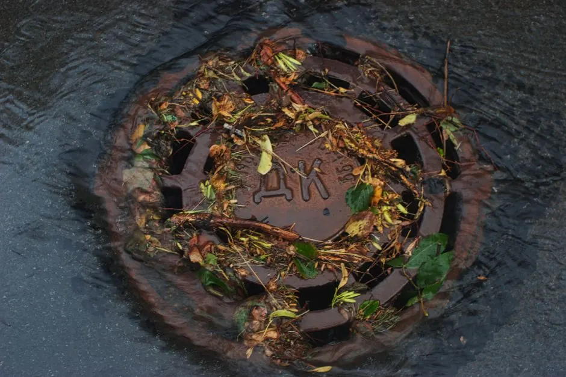

Drain Pipe Repair and Replacement
Cracked, corroded, or broken drain pipes can cause hidden slab leaks, soil voids, and structural damage. We look inside the pipe with a camera to find the cause and check the pipe's condition. For the full list of what we do, explore our drain cleaning in Naples, FL.
Clear arrival timeUpfront optionsClear findings
What our repair includes
Our inspection services cover essential checks to locate pipe damage. This includes camera inspection, condition reports, and identifying the source of leaks.
Thorough inspection
We look inside the pipe with a camera to find the cause and check the pipe's condition.
Diagnosis report
We share our findings on screen and explain the condition of the pipe.
Identify defects
We identify whether clogs, roots, or physical breaks are causing the issue.
Final testing
We look inside the line again or run water to confirm it is clear.
What is drain pipe repair in Naples, Florida?
Finding drain pipe issues starts with looking inside the line to spot cracks, root intrusion, and ground shifting. We look inside the pipe with a camera to find the cause and check the pipe's condition.
Naples homes can face pipe issues from sandy soil shifting and palm or ficus root intrusion. We trace the blockage or defect so you understand what is happening inside the line.

How we workWe verify the cause, compare realistic options, and confirm the repair before we leave.
Our repair process
The process flexes to the condition, but these checkpoints keep decisions clear.
Initial inspection
We look inside the pipe with a camera to find the cause and check the pipe condition.
Findings report
We share what we found on screen and explain the condition of the pipe.
Repair options
You hear the price and approve it before work starts.
Clearing the line
We clear the blockage with the tool that fits the cause, such as a cable, a root cutter, or high pressure water.
Final inspection
We look inside the line again or run water to confirm it is clear.
Tools and methods we use
Purpose-built equipment, used by trained technicians, so the job is done accurately the first time.
Drain camera
Used for inspecting the interior of pipes to identify blockages and damage.
Hydro jetter
A high pressure water tool used to clear clogs and clean pipe walls effectively.
Plumbing auger
A manual tool used to dislodge stubborn clogs in drain pipes.
Drain snake
A flexible tool used to reach and clear blockages in pipes of various sizes.
When to consider a repair
These examples show how the service framework adapts rather than forcing every call through one repair.

Visible leaks under fixtures
Moisture or pooling water around pipes can indicate joint separation or corrosion.
Main line backups
Multiple slow drains across the home can indicate roots or damage in the main sewer pipe.
Common problems we solve
Our repair services address several common plumbing issues that can disrupt your home.
Clogged drains causing backups
We clear the blockage with the tool that fits the cause, such as a cable, a root cutter, or high pressure water.
Leaking pipes leading to mold
We look inside the pipe with a camera to find the cause and check the pipe condition.
Slow drains indicating deeper issues
Clearing a slow drain early can stop it from becoming a full backup.
Pricing for drain pipe repair in Naples
PRICE BEFORE WORK
Extent of damage
More severe damage requires more time and equipment to evaluate.
Type of service
Different tools such as cameras, cables, or high pressure water take different equipment, which can change the price.
Accessibility
Access to the pipe, such as a clear cleanout, can change the time needed.

What causes drain pipe issues in Naples?
Drain pipe issues in Naples can be caused by tree root intrusion, shifting soil, and heavy rainfall leading to clogged drains. Regular maintenance can help prevent these problems.
How much does drain pipe repair cost in Naples?
Drain pipe repair costs depend on pipe accessibility, material, and line condition. We inspect the pipe first with a camera and give you a price before work starts.
When should I consider drain pipe repair in Naples?
Consider drain pipe repair when you notice slow drains, foul odors, or pooling water. If you suspect an underground line breach or damp slab, start with our drain line leak detection before digging.
How to repair a drain pipe in Naples?
Repairing a drain pipe starts with inspecting the pipe with a camera to identify the issue, then clearing the line with the right tool, such as a cable or high pressure water.
Related Services

Sewer Cleaning
Sewer cleaning clears the line that carries waste from your home to the city main or septic system.
Clogged Drain Clearing
Clearing the blockage restores flow through indoor fixtures and drains.
Drain Snaking and Cabling
A motorized cable breaks up stubborn clogs to restore flow.Need Drain Pipe Repair in Naples?
Call us and tell us what you are seeing. We will tell you the next open time and what to do while you wait.

Request pipe inspection
Call or email us about a clogged drain or a sewer backup. We reply as soon as we can.